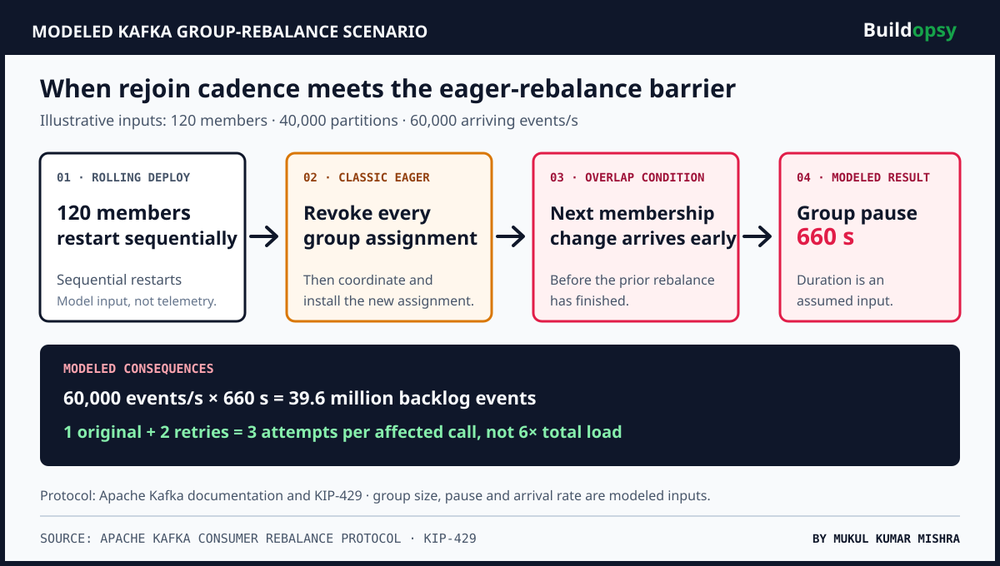

1. The Modeled Group and Deploy Inputs
This scenario assumes one classic-protocol consumer group with 120 members and 40,000 partitions, for an average of 40,000 ÷ 120 ≈ 333 partitions per member. The 60,000-events/s arrival rate is another model input. The example is not an incident report and uses no customer or broker telemetry.
In the classic group protocol, a membership or subscription change can require a new assignment. With the eager protocol, members revoke their current assignments before they receive the next assignment, pausing group-wide record processing. The cascade condition is that the next restart arrives before the current rebalance finishes. Partition count alone does not determine that duration; the companion model states its pause assumption separately.
2. The Overlap Condition
The count of 40,000 partitions describes assignment size, not assignment runtime. Duration depends on the Kafka version, assignor, group metadata, client work and application state restoration. The mechanism that can sustain a pause is an overlap: the next membership change arrives before the current classic-eager rebalance has completed. In symbols, restart interval τ is shorter than rebalance duration Tr. The scenario assumes that condition; it does not claim the partition count produces an 11-minute delay.
A separate timeout path can add triggers. Kafka documents that a consumer which misses max.poll.interval.ms can be treated as failed. For a static member, partition reassignment is delayed until its session timeout instead of happening immediately. The model does not calculate either timeout from a real client configuration.
After a pause, consumers may need to catch up on records produced during the gap. The backlog and any fetch surge depend on producer rate, retained offsets, fetch settings and processing capacity. They are second-order recovery risks to measure, not automatic consequences of 40,000 partitions.
3. Modeled Backlog and Retry Attempts
Assume producers continue at 60,000 events/s while consumers make no progress for 660 s. Then backlog = 60,000 × 660 = 39,600,000 events. This is Buildopsy scenario arithmetic, not a Kafka workload measurement.
Model downstream retries separately. If each affected logical call makes two immediate retries, then attempts per call = 1 original + 2 retries = 3. That means up to three attempts for those calls; it does not mean all Kafka traffic or broker load is 3× or 6×. Backoff, jitter, retry caps and idempotency change when and whether those attempts occur.
The retry-storm calculator prices attempts from request count, retry count and cost per attempt. Use measured arrival rates for your own recovery case rather than treating the modeled backlog as retry count.
4. What the Scenario Exposes
Protocol mode matters. This example is specifically about a classic consumer group using eager assignment. Kafka 4.2 documents group.protocol=classic as the default and lists RangeAssignor first in the default strategy list. The newer coordinator-driven consumer protocol is available but must be enabled separately.
Rollouts need group state. In the model, each restart can create a membership change while the prior assignment is unresolved. A rollout that waits for a stable group generation or limits concurrent restarts avoids assuming that “one pod at a time” means “one rebalance at a time.”
Measure the actual pause. Track rebalance latency, failed rebalance rate, generation changes, assignment size and application catch-up time. Throughput and broker health alone may not show whether consumers are waiting at a group-level barrier.
Retries are a separate load generator. The model uses two retries, which gives three attempts per affected call. Set attempt caps, backoff and jitter from the dependent service's measured recovery capacity; do not convert a per-call retry count into a blanket broker multiplier.
5. What Should Happen Instead
First, use a stable member identity where brief restarts should retain membership. Kafka's static membership delays removal until the session timeout; it does not eliminate rebalances after a longer absence.
Second, consider a cooperative assignor for classic groups. KIP-429 allows incremental revocation; it can keep partitions that do not move assigned, while moved partitions still need a safe handoff.
Third, make deploys group-aware. Wait for the group to stabilize, stagger restarts and cap concurrent restarts. The pipeline should read group state before touching the next member.
Fourth, budget retries separately from Kafka backlog. Use backoff, jitter, per-dependency retry caps and circuit breakers that open while lag is extreme. Price the measured retry policy with the retry-storm calculator. For a distinct managed-service failure mode, see Coinbase's MSK failover.
Fifth, alert on rebalance time, not just lag. Track rebalance latency, failed-rebalance rate, generations per hour and assignment size. Alerting should distinguish group coordination from a broker-capacity failure.
6. The Verdict
This model shows a specific classic-eager failure condition: if membership changes arrive before rebalances finish, the group can remain behind a group-wide barrier. With the stated assumptions, 60,000 events/s × 660 s yields 39.6 million backlog events, and two immediate retries yield three attempts per affected call. The 660-second pause is an input, not a value derived from partition count; the scenario does not claim an actual company outage.
The design lesson travels beyond Kafka: coordinate deployments with group state, measure the handoff window, and size retry limits against the recovery path. The protocol details are in the consumer rebalance guide. Static membership, cooperative assignment and the newer consumer protocol have distinct behaviors and version/configuration requirements.
40,000 partitions do not predict 11 minutes. The scenario assumptions do.
Sources and Method
This is a modeled scenario, not a published company incident. The inputs are 120 sequential member restarts, 40,000 partitions, a 660-second group pause, 60,000 arriving events per second and two immediate retries per affected logical call. The calculations are 40,000 ÷ 120 ≈ 333 average partitions per member; 60,000 × 660 = 39,600,000 backlog events; and 1 + 2 = 3 attempts per affected call. Kafka documentation supports the protocol behavior, not these scenario timings or rates.
- Apache Kafka 4.2 consumer configuration: classic protocol, static membership and max.poll.interval.ms
- Apache Kafka 4.2 consumer rebalance protocol: classic groups and KIP-848 consumer groups
- KIP-429: Kafka Consumer Incremental Rebalance Protocol
- KIP-345: Static membership protocol to reduce consumer rebalances
- KIP-848: The Next Generation of the Consumer Rebalance Protocol
- Buildopsy: Kafka consumer rebalance guide — the protocol mechanics
- Buildopsy: Coinbase MSK failover — stuck healing on managed Kafka